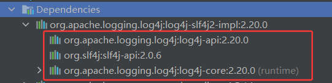
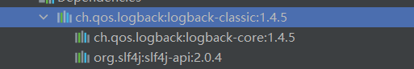
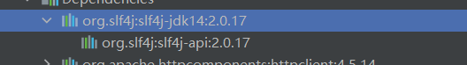

1.日志门面和日志框架
1.1 日志门面
- Java日志门面(日志抽象层)是一种抽象层，它为不同的日志实现提供一致的API
- Java日志门面的作用主要是面向接口开发，提供一种标准的方式来记录日志
- 通过使用日志门面，底层日志框架可灵活切换
- 常见的日志门面 ：SLF4J、JCL（已逐渐被 SLF4J 取代）
1.2 日志框架
常见的日志框架：JUL、Logback、Log4j（最终版本为 1.2.17，已废弃）、Log4j2
日志框架发展史（Log4j → Logback → Log4j2的演进）
Log4j2 ≠ Log4j 1.x：两者是不同项目，Log4j2 并非 Log4j 1.x 的简单更新
业务代码通过调用日志门面调用具体的日志框架
日志门面仅提供通用的日志 API 给业务代码，不包括每个日志框架的配置。因此在使用时，还是需要添加使用的具体的日志框架的配置文件
配置文件
XML（
log4j2.xml）JSON（
log4j2.json或log4j2.jsn）YAML（
log4j2.yaml或log4j2.yml）Properties（
log4j2.properties）
2.日志门面
2.1 SLF4J
2.1.1 创建日志对象
1.静态工厂方式（标准用法）
1 | import org.slf4j.Logger; |
- 特点：显式声明
static final保证线程安全，类名作为Logger名称自动映射配置层级 - 变体：支持字符串指定Logger名称（如
LoggerFactory.getLogger("custom.category")
2.Lombok注解简化
1 | import lombok.extern.slf4j.Slf4j; |
- 原理：编译时通过AST修改插入Logger初始化代码
- 扩展：支持
@Slf4j(topic="custom")指定Logger名称
3.动态Logger创建
//TODO 待补充
4.继承上下文Logger
//TODO 待补充
2.1.2 日志级别
- 仅定义标准级别：
TRACE/DEBUG/INFO/WARN/ERROR（按优先级从低到高） - 当底层框架（如Log4j2）支持
FATAL/OFF/ALL等扩展级别时，SLF4J会通过以下方式兼容：FATAL自动映射到ERROR级别输出OFF/ALL需通过框架原生API或配置文件控制
2.2 JCL
2.2.1 创建日志对象
静态工厂方式（标准用法）
1 | import org.apache.commons.logging.Log; |
- 特点：显式声明
static final保证线程安全，类名作为Logger名称自动映射配置层级 - 变体：支持字符串指定Logger名称（如
LogFactory.getLog("custom.logger.name")
2.2.2 日志级别
定义级别：DEBUG/INFO/WARN/ERROR/fatal（按优先级从低到高）
2.3 Log4j2
- Log4j2 本身既是日志实现框架，也提供了自己的 API 模块（
log4j-api），但严格来说它不属于独立的日志门面 log4j-api模块定义了接口，但通常与log4j-core（实现模块）强耦合，不具备门面的通用性（伪门面）
Log4j2原生API桥接
1 | import org.apache.logging.log4j.LogManager; |
3.日志框架
3.1 SLF4J + Log4j2
3.1.1 pom.xml
log4j-slf4j2-impl作为SLF4J与Log4j2的桥接包，其内部已声明对slf4j-api、log4j-api和log4j-core的依赖。Maven项目默认会传递这些依赖，因此理论上无需显式声明
若需指定特定版本（如修复安全漏洞），建议显式声明
slf4j-api、log4j-api和log4j-core，并统一版本号以避免冲突1
2
3
4
5
6
7
8
9
10
11
12
13
14
15
16
17
18
19
20
21
22
23
24
25
26
27
28
29
30
31
32<dependencies>
<!-- Log4j2 绑定器 + 核心 -->
<!--在SLF4J和Log4j2之间充当桥梁，将SLF4J的接口调用转发到Log4j2的具体实现-->
<dependency>
<groupId>org.apache.logging.log4j</groupId>
<artifactId>log4j-slf4j2-impl</artifactId>
<version>2.20.0</version>
</dependency>
<!-- SLF4J 门面 -->
<!--日志门面，提供统一的日志接口-->
<!-- 需与 log4j-slf4j2-impl 版本匹配 -->
<dependency>
<groupId>org.slf4j</groupId>
<artifactId>slf4j-api</artifactId>
<version>2.0.17</version>
</dependency>
<!-- 必须与 log4j-slf4j2-impl 版本一致 -->
<!-- Log4j的核心组件，日志实现-->
<dependency>
<groupId>org.apache.logging.log4j</groupId>
<artifactId>log4j-core</artifactId>
<version>2.20.0</version>
</dependency>
<!-- Log4j2 API -->
<dependency>
<groupId>org.apache.logging.log4j</groupId>
<artifactId>log4j-api</artifactId>
<version>2.20.0</version>
</dependency>
</dependencies>
3.1.2 日志组件
1 | Logger → 全局Filter → Appender接收 → Appender级Filter → Layout格式化 → 输出 |
3.1.2.1 Logger（日志记录器）
Logger（日志记录器）是日志系统的核心组件，负责捕获应用程序的日志事件 并决定 如何路由这些事件（如输出到控制台、文件或远程服务）
Logger 的核心作用
日志生成：通过代码调用（如
logger.info("Message")）创建日志事件日志过滤：根据配置的日志级别（
level）决定是否处理该事件日志路由：将日志事件传递给关联的
Appender（输出目标）
Logger 的层级结构
- Log4j2 的 Logger 采用 树形命名空间，基于 包/类全限定名 划分层级，继承规则如下：
- 命名规则：
com.example.MyClass的父 Logger 是 `com.example``- ``com.example
的父 Logger 是com` com的父 Logger 是rootLogger（所有 Logger 的默认父节点）
- 继承机制：
- 子 Logger 默认继承父 Logger 的
level、Filter和additivity属性 appenderRef需显式配置，不会自动继承(未显式配置appenderRef时，通过additivity=true的传递机制，日志仍能通过父 Logger 的 Appender 输出)
- 子 Logger 默认继承父 Logger 的
- 命名规则：
- Log4j2 的 Logger 采用 树形命名空间，基于 包/类全限定名 划分层级，继承规则如下：
分类
RootLogger（根日志记录器）
1
2
3
4
5
6# 必需配置项（无默认值）
rootLogger.level = [日志级别] # 如 error/warn/info/debug
rootLogger.appenderRef.[引用名].ref = [Appender名称] # 如 Console/File
# 可选配置（多Appender时使用）
rootLogger.appenderRef.[引用名2].ref = [另一个Appender名称]定位：所有Logger的默认父级，全局日志处理的兜底配置
特点：
默认级别通常为 **
ERROR**必须显式配置，否则日志系统无法工作
通过
rootLogger前缀在配置中定义默认继承给所有未明确配置的Logger
典型配置：
1
2rootLogger.level = info
rootLogger.appenderRef.console.ref = STDOUT- 作用：
- 处理未被自定义Logger捕获的日志事件
- 定义系统默认日志级别和输出目标
- 作用：
自定义Logger（Named Logger）
1
2
3
4
5
6
7# 核心配置
logger.[自定义名称].name = [包/类路径] # 如 com.example.service
logger.[自定义名称].level = [日志级别]
logger.[自定义名称].appenderRef.[引用名].ref = [Appender名称]
# 关键参数
logger.[自定义名称].additivity = [true/false] # 是否继承父Logger（默认true）定位：针对特定包/类的精细化日志控制
特点：
- 通过
logger.[自定义名称].name前缀配置（如logger.app.name = com.example） - 支持独立设置级别、Appender和继承行为
- 按包路径/类名进行层级匹配（如
com.example会匹配该包下所有类）
- 通过
核心参数：
level：覆盖RootLogger的日志级别appenderRef：指定专属Appenderadditivity：控制是否向上传递日志（默认true）
1
2
3
4
5# 自定义Logger
logger.dao.name = com.example.dao
logger.dao.level = debug
logger.dao.appenderRef.file.ref = File
logger.dao.additivity = false
3.1.2.2 Appender（输出器）
- Appender（输出器）负责将日志事件（LogEvent）输出到不同的目标位置
分类
按输出目标分类
Appender 类型 作用 ConsoleAppender 输出日志到控制台（System.out / System.err） FileAppender 输出日志到单个文件 RollingFileAppender 按时间/大小滚动生成新日志文件（避免单个文件过大） SocketAppender 通过网络发送日志到远程服务器 SMTPAppender 通过邮件发送错误日志 JDBCAppender 存储日志到数据库（MySQL、PostgreSQL等） KafkaAppender 发送日志到 Kafka 消息队列 SyslogAppender 兼容 Unix Syslog 协议 按功能特性分类
Appender 类型 作用 AsyncAppender 异步输出日志（提升性能） FailoverAppender 主 Appender 失败时自动切换到备用 Appender FilterableAppender 支持按日志级别（Level）、关键字等过滤日志
语法
1 | # 定义Appender |
Appender类型：需填写Log4j2内置的类型关键字（非完整类名，取xxxAppender的xxx前缀）例如
Appender类型 作用 示例写法 Console控制台输出 appender.console.type = ConsoleFile单文件输出 appender.file.type = FileRollingFile滚动文件输出 appender.rolling.type = RollingFileSMTP邮件发送日志 appender.mail.type = SMTPJDBC数据库存储日志 appender.db.type = JDBCKafkaKafka消息队列输出 appender.kafka.type = Kafka
示例
控制台输出（ConsoleAppender）
1
2
3
4appender.console.type = Console
appender.console.name = CONSOLE
appender.console.layout.type = PatternLayout
appender.console.layout.pattern = %d{yyyy-MM-dd HH:mm:ss} [%t] %-5level %logger{36} - %msg%n文件输出（FileAppender）
1
2
3
4
5appender.file.type = File
appender.file.name = FILE
appender.file.fileName = logs/app.log
appender.file.layout.type = PatternLayout
appender.file.layout.pattern = %d %p %c{1.} [%t] %m%n滚动文件（RollingFileAppender）
1
2
3
4
5
6
7
8
9
10
11appender.rolling.type = RollingFile
appender.rolling.name = ROLLING
appender.rolling.fileName = logs/rolling.log
appender.rolling.filePattern = logs/rolling-%d{yyyy-MM-dd}.log.gz
appender.rolling.layout.type = PatternLayout
appender.rolling.layout.pattern = %d %p %c{1.} [%t] %m%n
appender.rolling.policies.type = Policies
# 添加一个基于时间的滚动策略，当日志文件达到指定时间间隔时触发滚动（如每天生成新文件）
appender.rolling.policies.time.type = TimeBasedTriggeringPolicy
# 设置时间间隔为1个单位，配合filePattern中的日期格式（如%d{yyyy-MM-dd}）表示每天滚动一次
appender.rolling.policies.time.interval = 1
滚动文件（RollingFileAppender）
RollingFileAppender是 Log4j2 中最常用的 滚动日志文件输出器，它允许日志文件在满足条件（如时间、大小）时自动滚动（归档），避免单个日志文件过大，同时支持压缩和保留策略核心功能
- 日志滚动：按时间、文件大小等条件自动分割日志文件
- 归档策略：支持压缩（如
.gz、.zip）和保留历史文件数量 - 高性能：异步写入（结合
AsyncAppender使用更佳） - 灵活配置：支持基于时间、大小、混合策略的滚动规则
基础配置
1
2
3
4
5
6
7
8
9
10
11
12
13
14
15
16
17
18
19
20
21
22# 定义RollingFileAppender
appender.rolling.type = RollingFile
appender.rolling.name = RollingFile
appender.rolling.fileName = logs/app.log # 当前日志文件路径
appender.rolling.filePattern = logs/app-%d{yyyy-MM-dd}-%i.log.gz # 滚动文件命名模式
appender.rolling.layout.type = PatternLayout # 日志格式
appender.rolling.layout.pattern = %d{yyyy-MM-dd HH:mm:ss} %level %msg%n
# 滚动触发策略（按时间和大小）
appender.rolling.policies.type = Policies
appender.rolling.policies.time.type = TimeBasedTriggeringPolicy # 按天滚动
appender.rolling.policies.time.interval = 1 # 每天一个文件
appender.rolling.policies.size.type = SizeBasedTriggeringPolicy # 按大小滚动
appender.rolling.policies.size.size = 10MB # 每个文件最大10MB
# 文件保留策略
appender.rolling.strategy.type = DefaultRolloverStrategy
appender.rolling.strategy.max = 30 # 保留30个归档文件
appender.rolling.strategy.delete.type = Delete # 自动删除旧文件
appender.rolling.strategy.delete.basePath = logs # 扫描目录
appender.rolling.strategy.delete.maxDepth = 1 # 扫描深度
appender.rolling.strategy.delete.ifLastModified.age = 30d # 删除30天前的文件文件名与滚动模式
参数 说明 fileName当前活跃日志文件的路径（如 logs/app.log）filePattern滚动文件的命名模式，支持占位符： - %d{yyyy-MM-dd}：日期 -%i：序号（用于大小滚动） -.gz/.zip：压缩后缀1
2
3appender.rolling.filePattern = logs/app-%d{yyyy-MM-dd-HH}-%i.log.gz # 每小时滚动一次，压缩为 .gz 格式
appender.rolling.filePattern = logs/app-%d{yyyy-MM-dd}-%i.log.gz # 每天滚动一次，压缩为 .gz 格式滚动触发策略（Policies）
基于时间滚动
1
2
3appender.rolling.policies.time.type = TimeBasedTriggeringPolicy
appender.rolling.policies.time.interval = 1 # 滚动间隔（单位：天）
appender.rolling.policies.time.modulate = true # 对齐到自然时间（如午夜）基于文件大小滚动
1
2appender.rolling.policies.size.type = SizeBasedTriggeringPolicy
appender.rolling.policies.size.size = 10MB # 文件达到10MB时滚动混合策略（时间+大小）
1
2
3
4
5appender.rolling.policies.type = Policies
appender.rolling.policies.time.type = TimeBasedTriggeringPolicy
appender.rolling.policies.time.interval = 1
appender.rolling.policies.size.type = SizeBasedTriggeringPolicy
appender.rolling.policies.size.size = 100MB
文件保留策略（Strategy）
限制归档文件数量
1
2appender.rolling.strategy.type = DefaultRolloverStrategy
appender.rolling.strategy.max = 30 # 最多保留30个文件按时间删除旧文件
1
2
3appender.rolling.strategy.delete.type = Delete
appender.rolling.strategy.delete.basePath = logs
appender.rolling.strategy.delete.ifLastModified.age = 7d # 删除7天前的文件 d=天，h=小时按文件名匹配删除
1
appender.rolling.strategy.delete.ifName.matches = .*/app-.*\\.log.gz
3.1.2.3 Layout（格式化器）
Layout（格式化器） 负责将日志事件（LogEvent）转换成特定的文本格式，以便输出到控制台、文件、数据库等目标。它决定了日志的最终呈现方式，包括时间、日志级别、线程、类名、消息等内容如何排列和显示
Layout 通常作为 Appender 的子元素定义
1
2
3# 示例：PatternLayout 定义
appender.console.layout.type = PatternLayout
appender.console.layout.pattern = %d{yyyy-MM-dd HH:mm:ss} [%level] %logger{36} - %msg%n
分类
| Layout 类型 | 适用场景 |
|---|---|
PatternLayout |
默认选择，适用于大多数日志需求 |
JsonLayout |
需要结构化日志（ELK、Splunk） |
CsvLayout |
需要 Excel/数据库分析 |
XmlLayout |
需要 XML 格式日志 |
GelfLayout |
Graylog 日志收集 |
SyslogLayout |
Unix/Linux 系统日志 |
HtmlLayout |
Web 日志查看 |
PatternLayout（模式布局，最常用）
使用
%占位符自定义日志格式，适用于大多数日志场景1
2
3
4
5appender.<appender_name>.layout.type = PatternLayout
appender.<appender_name>.layout.pattern = %d{yyyy-MM-dd HH:mm:ss} [%level] %logger{36} - %msg%n
appender.console.layout.type = PatternLayout
appender.console.layout.pattern = %d{yyyy-MM-dd HH:mm:ss} [%t] %-5level %logger{36} - %msg%n常用占位符：
%d：日期时间（%d{yyyy-MM-dd}）%level：日志级别（INFO,ERROR）%logger：类名（{36}限制长度）%msg：日志消息%n：换行符%t：线程名%throwable：异常堆栈（%ex简写）
JsonLayout（JSON 布局）
将日志输出为 JSON 格式，适用于 ELK、Splunk 等日志分析工具
1
2
3
4
5
6appender.<appender_name>.layout.type = JsonLayout
appender.<appender_name>.layout.compact = true # 是否压缩输出（单行）
appender.<appender_name>.layout.complete = false # 是否包含完整日志元数据
appender.file.layout.type = JsonLayout
appender.file.layout.compact = true
HTML Layout（HTML 布局）
生成 HTML 格式的日志，适用于 Web 日志查看
1
2
3
4
5
6appender.<appender_name>.layout.type = HtmlLayout
appender.<appender_name>.layout.title = "Log4j2 Logs" # HTML 标题
appender.<appender_name>.layout.locationInfo = true # 是否包含位置信息
appender.html.layout.type = HtmlLayout
appender.html.layout.title = "Application Logs"
3.1.2.4 Filter（过滤器）
- Filter（过滤器）用于在日志事件到达 Appender（输出目标）之前进行条件筛选，决定是否记录或修改日志
- 过滤器的作用
- 日志过滤：按条件（如日志级别、关键字、标记等）决定是否记录日志
- 性能优化：减少不必要的日志写入，提高系统性能
- 日志分类：将不同日志路由到不同的 Appender（如错误日志单独存储）
- 动态控制：可在运行时动态调整日志记录策略
分类
基于日志级别（Level）的过滤
过滤器类型 作用 ThresholdFilter仅允许≥指定级别的日志（如只记录 ERROR 及以上） LevelRangeFilter允许在[min, max]级别范围内的日志（如只记录 INFO~WARN） 基于内容匹配的过滤
过滤器类型 作用 RegexFilter用正则表达式匹配日志内容 StringMatchFilter精确匹配字符串（如过滤含”password”的敏感日志） MarkerFilter按日志标记（Marker）过滤（如标记为”SECURITY”的日志） 复合逻辑过滤
过滤器类型 作用 CompositeFilter组合多个过滤器（需指定逻辑关系） AnyFilter/AllFilter任意一个/所有子过滤器匹配时生效
语法
1 | filter.{自定义名称}.type = {过滤器类型} |
示例
1 | # 内联方式直接配置ThresholdFilter,直接在Appender内部定义过滤器 |
1 | # 全局过滤器配置（可被多个组件引用） |
1 | # 定义第一个过滤器 |
3.1.3 配置文件
默认加载顺序：（需放在
src/main/resources目录下），未找到任何配置时启用DefaultConfiguration（控制台输出+基础格式）1
2
3
4//测试配置（含-test前缀）优先于正式配置，同前缀下格式优先级
//Properties > YAML > JSON > XML
log4j2-test.{properties|yaml|yml|json|jsn|xml} → log4j2.{properties|yaml|yml|json|jsn|xml}支持动态加载：通过
monitorInterval属性设置自动重载时间（单位：秒）
3.1.3.1 properties
1 | # 每30秒检查一次配置文件变更，若修改则自动重新加载配置 |
3.1.3.2 xml
1 |
|
3.2 SLF4J + Logback
3.2.1 pom.xml
logback-classic作为一个完整的日志实现，其内部已声明对slf4j-api和logback-core的依赖。Maven项目默认会传递这些依赖，因此理论上不需要再显式声明slf4j-api和logback-core
若需指定特定版本（如修复安全漏洞），建议显式声明
slf4j-api和logback-core，并统一版本号以避免冲突
1 | <dependencies> |
3.2.2 配置文件
3.3 SLF4J + JUL
3.3.1 pom.xml
slf4j-jdk14作为slf4j到jul的绑定实现，其内部已声明对slf4j-api的依赖。Maven项目默认会传递，因此理论上不需要再显式声明slf4j-api
若需指定特定版本（如修复安全漏洞），建议显式声明
slf4j-api，并统一版本号以避免冲突
1 | <dependencies> |